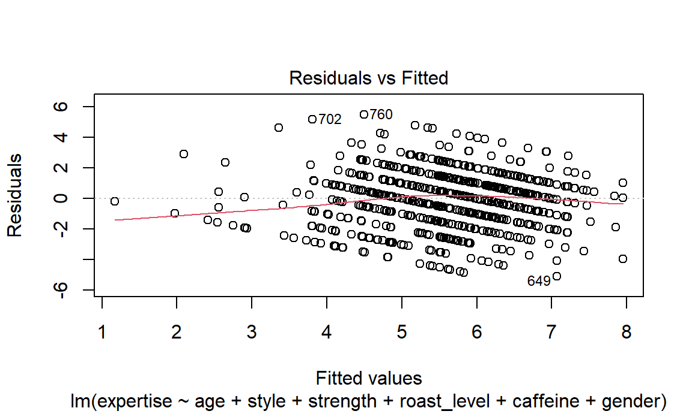
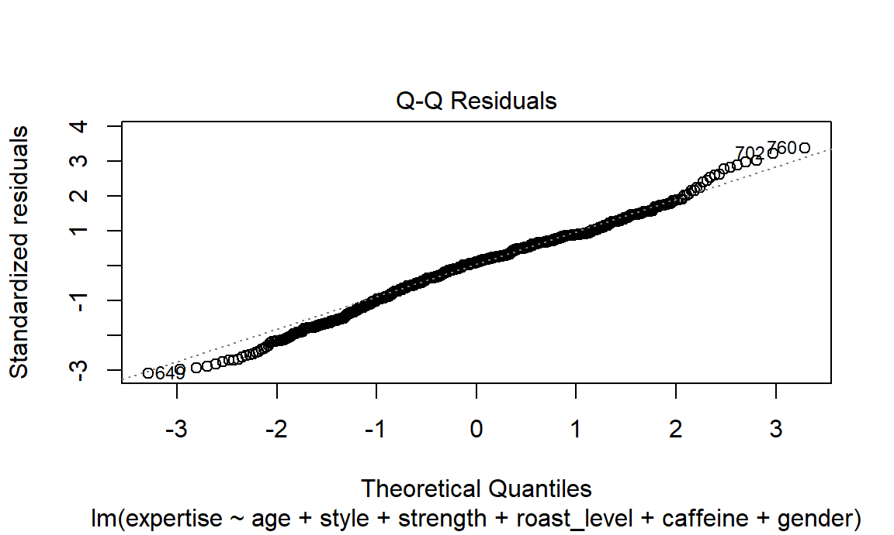
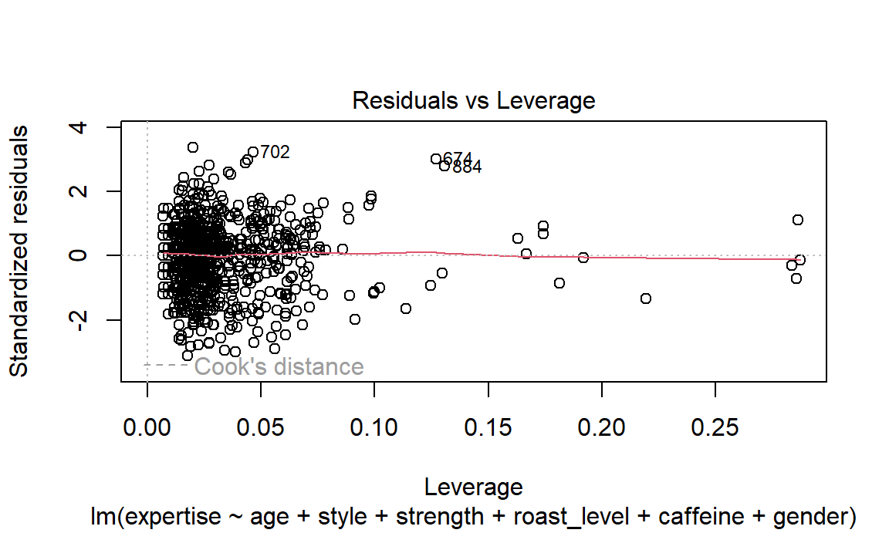
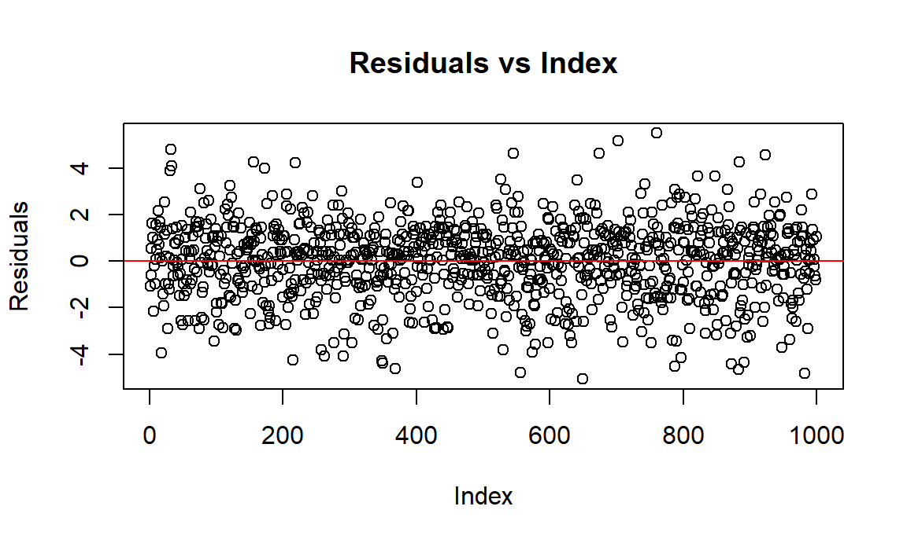

Inspired by EDA, we will continue to discover whether the flavor and people’s preference of coffee A, B, C and D is statistically significant, and what characteristics may influence people’s choice on coffee A or D, while they are rated similarly in flavors but actually different in processing method.
Also, since expertise is a self-rated measure here, we
will also examine what factors are correlated with how people rate
themselves to be coffee experts.
In this part, we perform 3 ANOVA tests and following pairwise t-tests on the difference of bitterness, acidity, and overall preference among Coffee A, B, C, and D.
survey_anova = survey_tidy |>
select(coffee_name, bitterness, acidity, preference) |>
na.omit() |>
slice_sample(n = 1000)anova_bitterness = aov(bitterness ~ coffee_name, data = survey_anova)
pairwise_bitterness = pairwise.t.test(survey_anova$bitterness, survey_anova$coffee_name,
p.adjust.method = "bonferroni")
print(pairwise_bitterness)##
## Pairwise comparisons using t tests with pooled SD
##
## data: survey_anova$bitterness and survey_anova$coffee_name
##
## Coffee A Coffee B Coffee C
## Coffee B <2e-16 - -
## Coffee C <2e-16 1 -
## Coffee D 1 <2e-16 <2e-16
##
## P value adjustment method: bonferronisurvey_anova |>
group_by(coffee_name) |>
summarise(
mean_bitterness = mean(bitterness)) |>
knitr::kable(digits = 3)| coffee_name | mean_bitterness |
|---|---|
| Coffee A | 2.063 |
| Coffee B | 2.996 |
| Coffee C | 3.000 |
| Coffee D | 2.189 |
The results suggest that, people rated Coffee B and C as significantly more bitter than Coffee A and D.
anova_acidity = aov(acidity ~ coffee_name, data = survey_anova)
pairwise_acidity = pairwise.t.test(survey_anova$acidity, survey_anova$coffee_name,
p.adjust.method = "bonferroni")
print(pairwise_acidity)##
## Pairwise comparisons using t tests with pooled SD
##
## data: survey_anova$acidity and survey_anova$coffee_name
##
## Coffee A Coffee B Coffee C
## Coffee B <2e-16 - -
## Coffee C <2e-16 0.011 -
## Coffee D 0.029 <2e-16 <2e-16
##
## P value adjustment method: bonferronisurvey_anova |>
group_by(coffee_name) |>
summarise(
mean_acidity = mean(acidity)) |>
knitr::kable(digits = 3)| coffee_name | mean_acidity |
|---|---|
| Coffee A | 3.632 |
| Coffee B | 2.170 |
| Coffee C | 2.431 |
| Coffee D | 3.877 |
The results suggest that, people rated Coffee A and D as significantly more acidic than Coffee B and C.
anova_preference = aov(preference ~ coffee_name, data = survey_anova)
pairwise_preference = pairwise.t.test(survey_anova$preference, survey_anova$coffee_name,
p.adjust.method = "bonferroni")
print(pairwise_preference)##
## Pairwise comparisons using t tests with pooled SD
##
## data: survey_anova$preference and survey_anova$coffee_name
##
## Coffee A Coffee B Coffee C
## Coffee B 0.703 - -
## Coffee C 0.022 0.976 -
## Coffee D 1.000 0.482 0.012
##
## P value adjustment method: bonferronisurvey_anova |>
group_by(coffee_name) |>
summarise(
mean_preference = mean(preference)) |>
knitr::kable(digits = 3)| coffee_name | mean_preference |
|---|---|
| Coffee A | 3.351 |
| Coffee B | 3.181 |
| Coffee C | 3.032 |
| Coffee D | 3.370 |
The results suggest that, people like Coffee D significantly more than Coffee B and C, and the rating of Coffee A is very similar to that of Coffee D.
Next, we want to investigate what factors influence people’s choice of Coffee A or D. From the exploratory analysis part, we found that most people who consider themselves to be expert select either Coffee A or D as their favorite. Nevertheless, what differentiate people, especially the experts, from choosing Coffee A and Coffee D?
The researchers who construct this survey introduced Coffee D as an innovative type of coffee with a fruity and fermented flavor, while Coffee A is a more typical light roast coffee. Is this the true underlying reason for people’s choices? We will try to answer this question by building a logistic model.
coffee_ad_df =
survey_tidy %>%
distinct(submission_id, prefer_ad, gender, age, expertise, style, strength, caffeine) %>%
drop_na(gender, age, expertise, style, strength, caffeine) %>%
filter(
gender %in% c("Male", "Female", "Non-binary"),
age != "<18 years old"
) %>%
mutate(prefer_ad = if_else(prefer_ad == "Coffee D", 1, 0))
bootstraps_ad =
coffee_ad_df %>%
bootstrap(100) %>%
mutate(
strap = map(strap, as_tibble),
models = map(strap, \(df) glm(prefer_ad ~ gender + age + expertise + style +
strength + caffeine, data = df, family = "binomial")),
results = map(models, broom::tidy)
) %>%
select(.id, results) %>%
unnest(results)
ad_results =
bootstraps_ad %>%
group_by(term) %>%
summarize(
boot_mean = mean(estimate),
boot_se = sd(estimate)
)
ad_results %>%
knitr::kable(digits = 3)| term | boot_mean | boot_se |
|---|---|---|
| (Intercept) | -1.041 | 0.401 |
| age18-24 years old | 1.069 | 0.285 |
| age25-34 years old | 1.066 | 0.282 |
| age35-44 years old | 0.883 | 0.292 |
| age45-54 years old | 0.614 | 0.317 |
| age55-64 years old | 0.515 | 0.348 |
| caffeineFull caffeine | -0.607 | 0.209 |
| caffeineHalf caff | -0.719 | 0.245 |
| expertise | 0.033 | 0.020 |
| genderMale | 0.124 | 0.089 |
| genderNon-binary | 0.516 | 0.211 |
| strengthSomewhat light | 0.026 | 0.157 |
| strengthSomewhat strong | 0.129 | 0.082 |
| strengthVery strong | 0.149 | 0.137 |
| strengthWeak | -0.124 | 0.391 |
| styleBright | 0.367 | 0.187 |
| styleCaramalized | -0.401 | 0.189 |
| styleChocolatey | 0.223 | 0.170 |
| styleFloral | 0.317 | 0.222 |
| styleFruity | 1.377 | 0.177 |
| styleFull Bodied | 0.059 | 0.187 |
| styleJuicy | 1.037 | 0.204 |
| styleNutty | -0.008 | 0.217 |
| styleSweet | 0.195 | 0.196 |
bootstraps_ad %>%
mutate(term = fct_reorder(term, estimate)) %>%
group_by(term) %>%
plot_ly(x = ~estimate,
color = ~term,
type = "box",
colors = "viridis",
showlegend = FALSE) %>%
layout(title = "Distribution of terms",
xaxis = list(title = "Estimate"),
yaxis = list(title = "Term"))The results of the logistic model and the bootstrapping process are in good accordance with the researchers’ introduction about Coffee A and D. More specifically, people who like fruity and juicy style of coffee are more likely to like Coffee D, so do young people. This implies that, since Coffee D is natural processed and has an highly fermented unusual flavor, young people who are still developing taste may accept it more easily, while older people are more accustomed to “traditionally” good coffee.
Since expertise here is a subjective rating and is associated with people’s preference of coffee A and D, we decide to build a model to see what variables are correlated with this variable.
survey_model = survey_tidy |>
distinct(submission_id, .keep_all = TRUE) |>
select(expertise, age, favorite, style, strength, roast_level,
caffeine, gender, education_level) |>
na.omit() |>
filter(
gender %in% c("Male", "Female", "Non-binary"),
age != "<18 years old"
) |>
slice_sample(n = 1000)
x = model.matrix(expertise ~ ., data = survey_model)[, -1]
y = survey_model |> pull(expertise)
lambda = 10^seq(-2, 2.75, by = 0.1)
lasso_fit =
glmnet(x = x, y = y, lambda = lambda)
lasso_cv =
cv.glmnet(x = x, y = y, lambda = lambda)
## lambda of the best fit
lambda_opt = lasso_cv[["lambda.min"]]
lasso_fit_best =
glmnet(x = x, y = y, lambda = lambda_opt)
lasso_fit_best |>
broom::tidy() |>
select(term, estimate, lambda) |>
knitr::kable(digits = 4)| term | estimate | lambda |
|---|---|---|
| (Intercept) | 4.7116 | 0.0398 |
| age45-54 years old | 0.1167 | 0.0398 |
| favoriteBlended drink | -1.8950 | 0.0398 |
| favoriteCortado | 0.5038 | 0.0398 |
| favoriteEspresso | 0.3392 | 0.0398 |
| favoriteIced coffee | -0.0375 | 0.0398 |
| favoriteLatte | -0.3520 | 0.0398 |
| favoriteMocha | -0.2628 | 0.0398 |
| favoritePourover | 0.5462 | 0.0398 |
| styleChocolatey | -0.0406 | 0.0398 |
| styleFloral | 0.0124 | 0.0398 |
| styleFruity | 0.3482 | 0.0398 |
| styleFull Bodied | -0.2792 | 0.0398 |
| styleJuicy | 0.3750 | 0.0398 |
| styleSweet | -0.1623 | 0.0398 |
| strengthSomewhat light | -0.6845 | 0.0398 |
| strengthSomewhat strong | 0.2020 | 0.0398 |
| strengthVery strong | 0.4210 | 0.0398 |
| strengthWeak | -0.8135 | 0.0398 |
| roast_levelDark | -0.0898 | 0.0398 |
| roast_levelItalian | -1.0427 | 0.0398 |
| roast_levelLight | 0.3005 | 0.0398 |
| roast_levelNordic | 0.8686 | 0.0398 |
| caffeineFull caffeine | 0.0208 | 0.0398 |
| genderMale | 0.8878 | 0.0398 |
| genderNon-binary | 0.4751 | 0.0398 |
| education_levelMaster’s degree | -0.0869 | 0.0398 |
| education_levelSome college or associate’s degree | 0.0141 | 0.0398 |
The LASSO model chooses all the variables provided in the model, with age variable of the level 35-44 years old, caffeine variable of the level full caffeine, gender variable of the levels male and non-binary, and education variable of the levels master’s degree, high school graduate, and less than high school.
Since the LASSO model’s optimal lambda is very small (0.0398107), it suggests that the fitting progress will be very similar to that of fitting a multiple linear regression model, which is what we will do below.
full_mlr = lm(expertise ~ age + favorite + style + strength + roast_level +
caffeine + gender + education_level, data = survey_model)
step(full_mlr, direction = "backward")
final_mlr = lm(expertise ~ age + style + strength + roast_level +
caffeine + gender, data = survey_model)final_mlr |>
broom::tidy() |>
knitr::kable(digits = 3)| term | estimate | std.error | statistic | p.value |
|---|---|---|---|---|
| (Intercept) | 3.097 | 0.618 | 5.013 | 0.000 |
| age55-64 years old | 0.584 | 0.412 | 1.418 | 0.156 |
| age45-54 years old | 0.476 | 0.375 | 1.272 | 0.204 |
| age35-44 years old | 0.263 | 0.338 | 0.778 | 0.437 |
| age25-34 years old | 0.267 | 0.331 | 0.806 | 0.421 |
| age18-24 years old | 0.127 | 0.368 | 0.346 | 0.729 |
| styleBright | 0.037 | 0.306 | 0.121 | 0.904 |
| styleCaramalized | -0.239 | 0.316 | -0.756 | 0.450 |
| styleChocolatey | -0.253 | 0.277 | -0.914 | 0.361 |
| styleFloral | 0.178 | 0.341 | 0.521 | 0.603 |
| styleFruity | 0.429 | 0.284 | 1.510 | 0.131 |
| styleFull Bodied | -0.535 | 0.285 | -1.876 | 0.061 |
| styleJuicy | 0.526 | 0.323 | 1.630 | 0.104 |
| styleNutty | -0.264 | 0.314 | -0.843 | 0.399 |
| styleSweet | -0.645 | 0.324 | -1.988 | 0.047 |
| strengthSomewhat light | -0.853 | 0.244 | -3.499 | 0.000 |
| strengthSomewhat strong | 0.384 | 0.120 | 3.216 | 0.001 |
| strengthVery strong | 0.623 | 0.180 | 3.457 | 0.001 |
| strengthWeak | -1.393 | 0.474 | -2.938 | 0.003 |
| roast_levelDark | 0.304 | 0.391 | 0.777 | 0.437 |
| roast_levelFrench | 0.159 | 0.723 | 0.220 | 0.826 |
| roast_levelItalian | -0.408 | 0.927 | -0.440 | 0.660 |
| roast_levelLight | 1.041 | 0.358 | 2.908 | 0.004 |
| roast_levelMedium | 0.659 | 0.357 | 1.847 | 0.065 |
| roast_levelNordic | 1.923 | 0.517 | 3.723 | 0.000 |
| caffeineHalf caff | 0.808 | 0.406 | 1.991 | 0.047 |
| caffeineFull caffeine | 0.695 | 0.315 | 2.209 | 0.027 |
| genderMale | 1.059 | 0.132 | 8.015 | 0.000 |
| genderNon-binary | 0.832 | 0.348 | 2.393 | 0.017 |
plot(final_mlr, which = 1)
plot(final_mlr, which = 2)
plot(final_mlr, which = 5)
residuals = resid(final_mlr)
index = 1:length(residuals)
plot(index, residuals, type = "p",
main = "Residuals vs Index",
xlab = "Index", ylab = "Residuals") +
abline(h = 0, col = "red")
## integer(0)The multiple linear regression model generated by backward stepping contains variables age, style, strength, roast level, caffeine, and gender. It is noticable that the MLR model omits the favorite and education level, while the LASSO model contains certain levels of them. However, the p-values demonstrate that only style_fruity, style_juicy, all levels of the variable strength, roast_level Italian, roast_level Nordic, and gender_male significantly associates with the response variable, expertise. More specifically, the more fruity and juicy the person’s preferred style is, the more they perceive themselves as a coffee expert; the stronger the person like their coffee to be, the more they perceive themselves as a coffee expert; to our surprise, people who consider themselves as experts dislike Italian coffee but prefer Nordic coffee; and the most interestingly, males tend to rate themselves as expert much more than females do, with a very small p-value (< 0.0001).
The diagnosis plots show that the assumptions of the MLR model (equal residual variance, normally distributed residuals, independent residuals) are satisfied here, and there is no influential outliers.
bootstraps_survey =
survey_model |>
bootstrap(100) |>
mutate(
strap = map(strap, as_tibble),
models = map(strap, \(df) lm(expertise ~ age + style + strength + roast_level + caffeine + gender, data = df)),
results = map(models, broom::tidy)
) |>
select(.id, results) |>
unnest(results)
bootstrap_results =
bootstraps_survey |>
group_by(term) |>
summarize(
boot_mean = mean(estimate),
boot_se = sd(estimate)
)
bootstrap_results %>%
knitr::kable(digits = 3)| term | boot_mean | boot_se |
|---|---|---|
| (Intercept) | 3.137 | 0.669 |
| age18-24 years old | 0.114 | 0.449 |
| age25-34 years old | 0.255 | 0.423 |
| age35-44 years old | 0.249 | 0.406 |
| age45-54 years old | 0.473 | 0.461 |
| age55-64 years old | 0.588 | 0.462 |
| caffeineFull caffeine | 0.616 | 0.404 |
| caffeineHalf caff | 0.687 | 0.507 |
| genderMale | 1.062 | 0.136 |
| genderNon-binary | 0.754 | 0.427 |
| roast_levelDark | 0.324 | 0.368 |
| roast_levelFrench | 0.216 | 0.569 |
| roast_levelItalian | -0.445 | 0.817 |
| roast_levelLight | 1.037 | 0.335 |
| roast_levelMedium | 0.660 | 0.333 |
| roast_levelNordic | 1.909 | 0.470 |
| strengthSomewhat light | -0.842 | 0.247 |
| strengthSomewhat strong | 0.409 | 0.110 |
| strengthVery strong | 0.655 | 0.169 |
| strengthWeak | -1.415 | 0.790 |
| styleBright | 0.096 | 0.292 |
| styleCaramalized | -0.183 | 0.375 |
| styleChocolatey | -0.214 | 0.302 |
| styleFloral | 0.229 | 0.365 |
| styleFruity | 0.465 | 0.275 |
| styleFull Bodied | -0.499 | 0.287 |
| styleJuicy | 0.592 | 0.342 |
| styleNutty | -0.204 | 0.343 |
| styleSweet | -0.637 | 0.370 |
bootstraps_survey %>%
mutate(term = fct_reorder(term, estimate)) %>%
group_by(term) %>%
plot_ly(x = ~estimate,
color = ~term,
type = "box",
colors = "viridis",
showlegend = FALSE) %>%
layout(title = "Distribution of terms",
xaxis = list(title = "Estimate"),
yaxis = list(title = "Term"))Next, we did a bootstrap to show the distribution of slopes in the MLR for each predictor during model fitting. As the plot reveals, roast_level Nordic and gender_male the most positively correlate with self-perceived expertise, while a weak strength level and roast_level Italian the most negatively correlate with this response variable.
library("MASS")
contingency_table = xtabs(expertise ~ age + style + strength + roast_level +
caffeine + gender, data = survey_model)
print(contingency_table)
stepwise_model = step(loglm(expertise ~ (age + style + strength + roast_level +
caffeine + gender)^2,
data = contingency_table))
detach("package:MASS", unload = TRUE)summary(stepwise_model)## Formula:
## expertise ~ (age + style + strength + roast_level + caffeine +
## gender)^2
## attr(,"variables")
## list(expertise, age, style, strength, roast_level, caffeine,
## gender)
## attr(,"factors")
## age style strength roast_level caffeine gender age:style
## expertise 0 0 0 0 0 0 0
## age 1 0 0 0 0 0 1
## style 0 1 0 0 0 0 1
## strength 0 0 1 0 0 0 0
## roast_level 0 0 0 1 0 0 0
## caffeine 0 0 0 0 1 0 0
## gender 0 0 0 0 0 1 0
## age:strength age:roast_level age:caffeine age:gender style:strength
## expertise 0 0 0 0 0
## age 1 1 1 1 0
## style 0 0 0 0 1
## strength 1 0 0 0 1
## roast_level 0 1 0 0 0
## caffeine 0 0 1 0 0
## gender 0 0 0 1 0
## style:roast_level style:caffeine style:gender strength:roast_level
## expertise 0 0 0 0
## age 0 0 0 0
## style 1 1 1 0
## strength 0 0 0 1
## roast_level 1 0 0 1
## caffeine 0 1 0 0
## gender 0 0 1 0
## strength:caffeine strength:gender roast_level:caffeine
## expertise 0 0 0
## age 0 0 0
## style 0 0 0
## strength 1 1 0
## roast_level 0 0 1
## caffeine 1 0 1
## gender 0 1 0
## roast_level:gender caffeine:gender
## expertise 0 0
## age 0 0
## style 0 0
## strength 0 0
## roast_level 1 0
## caffeine 0 1
## gender 1 1
## attr(,"term.labels")
## [1] "age" "style" "strength"
## [4] "roast_level" "caffeine" "gender"
## [7] "age:style" "age:strength" "age:roast_level"
## [10] "age:caffeine" "age:gender" "style:strength"
## [13] "style:roast_level" "style:caffeine" "style:gender"
## [16] "strength:roast_level" "strength:caffeine" "strength:gender"
## [19] "roast_level:caffeine" "roast_level:gender" "caffeine:gender"
## attr(,"order")
## [1] 1 1 1 1 1 1 2 2 2 2 2 2 2 2 2 2 2 2 2 2 2
## attr(,"intercept")
## [1] 1
## attr(,"response")
## [1] 1
## attr(,".Environment")
## <environment: R_GlobalEnv>
##
## Statistics:
## X^2 df P(> X^2)
## Likelihood Ratio 6878.509 36332 1
## Pearson NaN 36332 NaNWith the significant variables known, we want to see if the variables interact with each other to make the correlation more complex, so we build a log linear model to probe this question. Some interesting interactions revealed by the model are: older people who like stronger coffee tend to rate themselves as more expert; older males tend to rate themselves higher on the expertise scale; and experts who like stronger coffee will also like Nordic styled coffee.